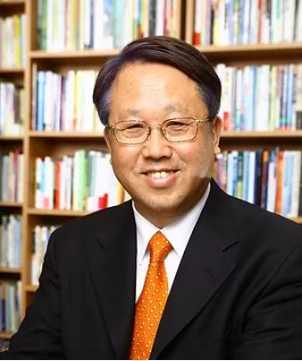
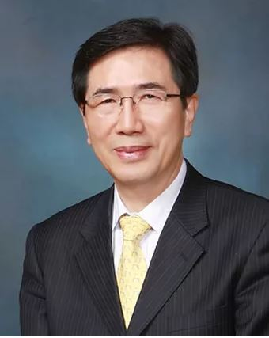
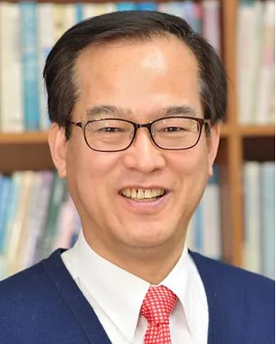
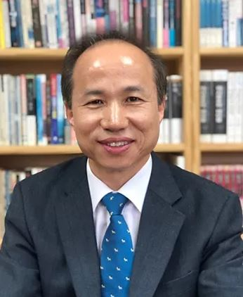
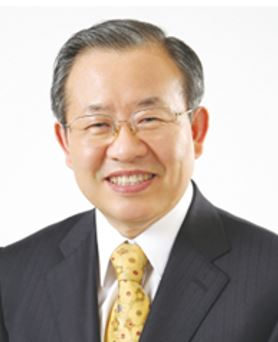

syme
syme
추천사
-

이동원 목사 (지구촌 교회 원로목사)
SYME는 기독교 청년들에게 영어와 제자 훈련 그리고 청소년 사역을 동시에 배우고 경험할 수 있도록 준비된 프로그램입니다. SYME는 국제 사회가 요구하는 영어와 우리 주님께서 원하시는 제자 훈련을 동시에 제공하는 훌륭한 프로그램으로서 말씀으로 양육 받고 영어 실력을 향상 시키고자 하는 청년들에게 적극 추천합 니다.
-

배국순 목사 (송탄중앙침례교회)
SYME 홈페이지에 오신 여러분을 환영합니다. 한국 생명의말씀협회는 지난 30년간 한국의 다음 세대를 위해 힘써온 선교 단체입니다. 이 단체를 통하여 다음 세대의 학생들이 캠프, 영어, 하나님의 말씀으로 그리스도를 만나고 삶의 목적이 바뀌는 은혜를 경험했습니다. 저의 두 아들과 조카들도 이곳을 통해 훈련받으며 훌륭하게 자라서 지금은 세계 곳곳에서 하나님의 사람으로 인정받으며 주님의 몸된 교회에서 열심으로 섬기고 있습니다. 일회적인 이벤트로 끝나는 것이 아니라, 지속적인 훈련으로 변화를 원하는 목사님과 청소년 사역자 그리고 미래의 주인공인 다음 세대들에게 기쁜 마음으로 추천합니다
-

이명규 목사 (서서울 성서침례교회 담임)
제가 만약 청년의 시기로 돌아갈 수 있는 기회가 주어져, 꼭 한 번 가서 훈련받아 보고 싶은 곳이 있다면 한국 생명의 말씀협회 SYME (School of Youth Ministries in English)입니다. 왜냐하면 분명한 구원의 확신을 가질 수 있고, 성경적인 비전과 가치관을 세워갈 수 있고 좋은 멘토를 만날 수 있는 곳이기 때문입니다. 그리고 또 하나 영어를 함께 배울 수 있다는 것입니다. SYME는 인생의 중요한 시기에 접어든 믿음의 청년들에게 권하고 싶은 곳입니다
-

서종식 목사 (대한예수교 장로회 살렘교회 담임)
청소년들과 부모님들께 강력 추천합니다!" 지인의 소개로 두 자녀를 보내서 훈련 받게 했고, 다섯 명의 청소년들을 소개하여 보내었습니다. SYME는 청소년기의 기독교적 세계관 확립과 자기에게 주어진 인생의 길과 소명을 발견하게 하는 탁월한 훈련장입니다. 자비량 선교사님들과 교사들을 통해 사랑과 헌신과 섬김을 배우고, 공동체 생활을 통해 ‘함께’와 ‘스스로’를 세워가는 법을 배울 수 있습니다. 무엇보다 모든 훈련이 영어로 진행되어 자연스럽게 영어를 생활 속에서 체득하게 됩니다. 청소년들과 부모님들에게 정 말 강추합니다!
-

김정서 원로 목사 (제주 영락교회)
SYME는 기독교 청년들에게 영어와 제자 훈련 그리고 청소년 사역을 동시에 배우고 경험할 수 있도록 준비된 프로그램입니다. SYME는 국제 사회가 요구하는 영어와 우리 주님께서 원하시는 제자 훈련을 동시에 제공하는 훌륭한 프로그램으로서 말씀으로 양육 받고 영어 실력을 향상 시키고자 하는 청년들에게 적극 추천합 니다.